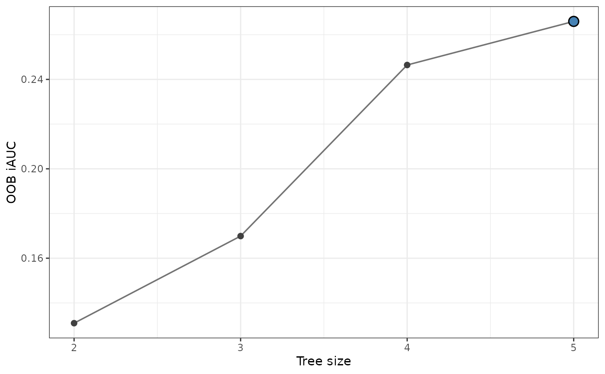

Extracts an already calculated tree-size tuning path from
randomForestRHF::tune.treesize.rhf() into a data frame for inspection and
plotting. The expensive step is upstream tuning. Calculate and retain that
result once, then supply it to gg_tune_rhf() when you need the saved search
path or its plot. gg_tune_rhf() only prepares that path; it never tunes a
forest.
Usage
gg_tune_rhf(tune_fit, ...)
# S3 method for class 'tune.treesize.rhf'
gg_tune_rhf(tune_fit, ...)Arguments
- tune_fit
An object inheriting from
tune.treesize.rhf, typically returned byrandomForestRHF::tune.treesize.rhf(),randomForestRHF::tune.rhf(), orrandomForestRHF::tune.iAUC.rhf().- ...
Additional arguments reserved for methods.
Value
A data.frame with class
c("gg_tune_rhf", "data.frame") and columns treesize, metric,
value, se, and selected. The provenance attribute contains the
upstream settings described in gg_tune_rhf.
Details
The returned path preserves the row order in tune_fit$path. Its columns
are treesize (evaluated forest size), metric ("OOB risk" or
"OOB iAUC"), value (the observed metric), se (the supplied bootstrap
iAUC standard error, or NA_real_), and selected (whether that size is
the upstream best.size). Upstream tuning minimizes OOB risk or maximizes
OOB iAUC.
Provenance is stored in the provenance attribute: best_size is the
selected tree size; best_err is OOB risk for risk tuning and 1 - iAUC
for iAUC tuning; perf identifies the criterion; method is the upstream
search method; bounds
gives its tree-size range; n_evaluations counts the evaluated sizes; and
randomForestRHF_version records the installed upstream package version.
The optional fitted forest is not copied into the tidy result.
References
Ishwaran H, Hsich EM, Kogalur UB, Lee DKK (2026). Random Hazard Forests. arXiv:2608.21597. doi:10.48550/arXiv.2608.21597 .
Ishwaran H, Kogalur UB (2026). randomForestRHF: Random Hazard Forests. R package version 2.0.0. https://CRAN.R-project.org/package=randomForestRHF.
Examples
# \donttest{
if (requireNamespace("randomForestRHF", quietly = TRUE)) {
## Calculate this expensive result once and retain it for reuse.
simulated <- randomForestRHF::hazard.simulation(1, n = 100, nrecords = 3)
tune_fit <- randomForestRHF::tune.iAUC.rhf(
"Surv(id, start, stop, event) ~ .",
simulated$dta,
ntree = 12L,
lower = 2L,
upper = 5L,
verbose = FALSE,
forest = FALSE
)
tuning <- gg_tune_rhf(tune_fit)
plot(tuning)
}

# }